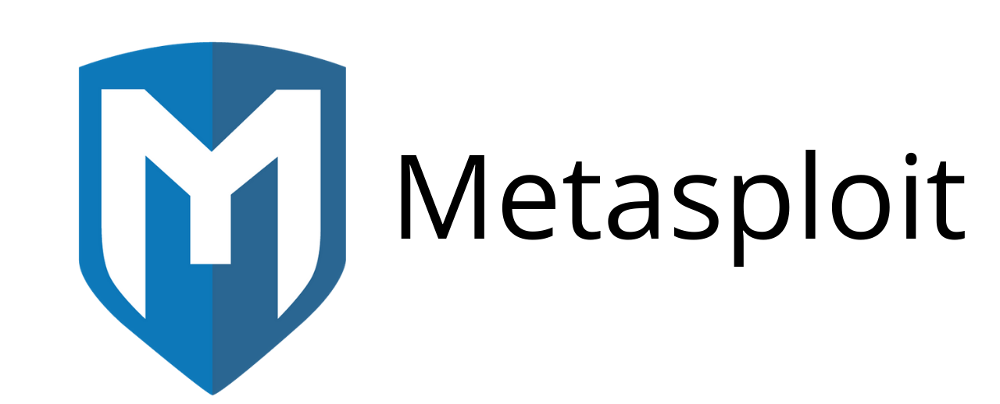
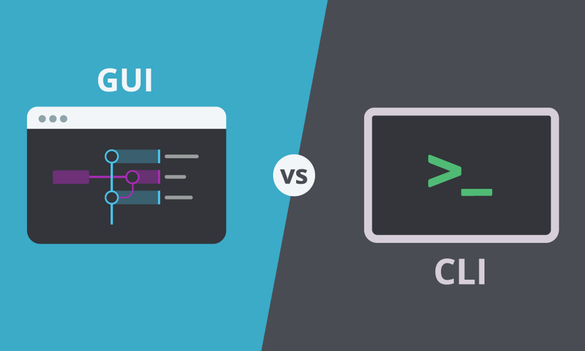
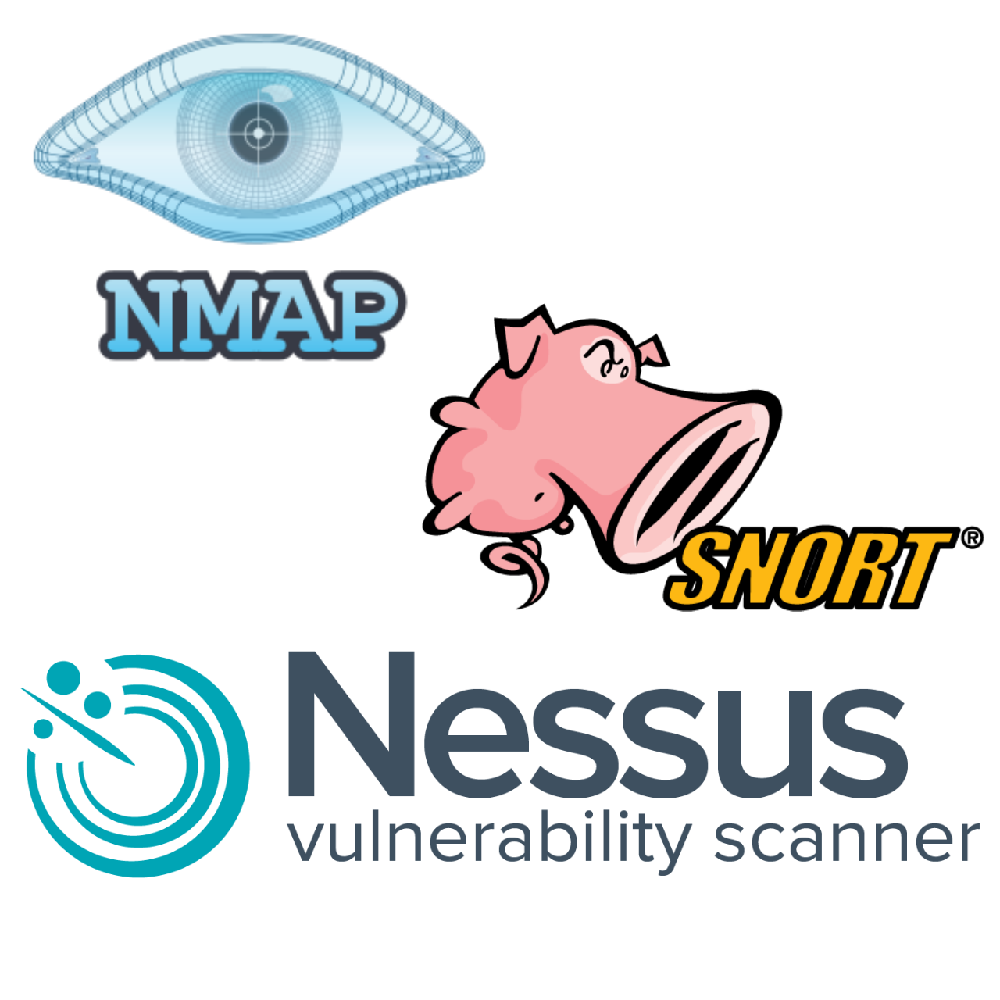
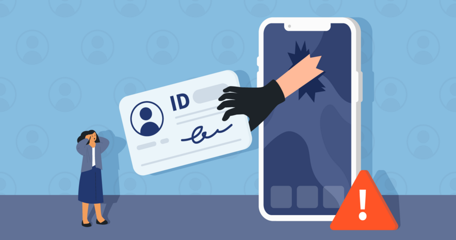

Metasploit
Metasploit es uno de los frameworks más populares y completos utilizados para probar la seguridad de los sistemas informáticos, especialmente dentro del sistema operativo Kali Linux.
Metasploit es uno de los frameworks más populares y completos utilizados para probar la seguridad de los sistemas informáticos, especialmente dentro del sistema operativo Kali Linux. Es un software de código abierto desarrollado inicialmente por H.D. Moore en 2003, su objetivo principal es permitir a los profesionales de seguridad desarrollar y ejecutar exploits contra una máquina remota. Específicamente, es utilizado para encontrar y explotar vulnerabilidades en sistemas y aplicaciones de software.
Un exploit es un programa o código que al ejecutarse se aprovecha de una vulnerabilidad en un sistema, programa o protocolo, para que el creador de dicho programa lo utilice en su beneficio, por ejemplo, para crear una puerta trasera, concebir un equipo zombie (bot), escalar privilegios, instalar un rootkit, robar información u otras actividades maliciosas.
Metasploit se puede utilizar para pruebas de penetración, auditorías de seguridad, investigaciones forenses, y para desarrollar habilidades de seguridad en general; esto debido a que contiene una colección de 900 exploits distintos. Este framework está disponible tanto en una versión gratuita como en una de pago, y puede utilizarse por sí solo o como parte de sistemas más amplios de pruebas de seguridad.
Sus principales características son:
- ★ Modularidad: Metasploit se compone de módulos que incluyen exploits, payloads, encoders, y nops. Cada módulo es una pieza específica que puede ser utilizada y combinada con otros módulos dentro del framework. Esto permite a los usuarios adaptar sus ataques a situaciones específicas.
- ★ Amplia Base de Datos: Posee una extensa base de datos de exploits ya disponibles, que cubren una amplia gama de software y vulnerabilidades conocidas.
- ★ Payloads: Un payload es lo que permite al atacante obtener control o extraer información del sistema afectado tras la explotación exitosa de una vulnerabilidad. Los payloads pueden ser simples como un shell o complejos como meterpreter, un payload avanzado que extiende la interfaz de control sobre el sistema objetivo.
- ★ Interfaz Gráfica y Consola: Metasploit puede ser operado a través de una interfaz gráfica de usuario (GUI) llamada Armitage, o mediante una consola de línea de comandos que proporciona control total al usuario. 
- ★ Integración con otros sistemas: Se integra fácilmente con otros sistemas y herramientas de pruebas de seguridad como Nmap, Snort, y Nessus, lo cual facilita realizar pruebas de seguridad complejas y detalladas. 
- ★ Actualizaciones frecuentes: Los módulos de Metasploit se actualizan constantemente con nuevos exploits y payloads a medida que se descubren nuevas vulnerabilidades.
Robo de identidad
El robo de identidad o usurpación de identidad, es cuando una persona obtiene, transfiere, utiliza o se apropia de manera indebida, de los datos personales de otra sin la autorización de ésta última, usualmente para cometer un fraude o delito.
El robo de identidad o usurpación de identidad, es cuando una persona obtiene, transfiere, utiliza o se apropia de manera indebida, de los datos personales de otra sin la autorización de ésta última, usualmente para cometer un fraude o delito. Los datos personales incluyen información como nombre, teléfono, domicilio, fotografías, huellas dactilares, números de licencia y de seguridad social, incluyendo información financiera o médica, así como cualquier otro dato que permita identificar a una persona.
Los ladrones de identidad utilizan métodos sofisticados para robar información personal a víctimas desprevenidas como la ingeniería social y el phishing, los ataques de malware, los dispositivos de skimming e incluso pueden realizar la búsqueda en contenedores de basura para apoderarse de datos confidenciales.
Para prevenir el robo de identidad, es importante tomar medidas como proteger la información personal, utilizar contraseñas seguras, estar atento a posibles señales de fraude y revisar regularmente los estados financieros y el historial crediticio. En caso de ser víctima, es fundamental informar a las autoridades pertinentes, como la policía y las agencias de crédito, y tomar medidas para mitigar el daño y restaurar la identidad robada.
Algunas características a tomar en cuenta en el robo de identidad son:
- ★ Obtención de información personal: Los ladrones de identidad pueden obtener información personal de diversas formas como phishing, hackeo, filtraciones de datos, skimming, shoulder surfing, robo de objetos físicos, entre otros.
- ★ Uso fraudulento de la información: Una vez que obtienen la información personal, los delincuentes la utilizan para cometer diversos tipos de delitos como realizar compras no autorizadas, abrir nuevas cuentas, solicitar préstamos o presentar declaraciones de impuestos fraudulentas.
- ★ Dificultad de detección temprana: El robo de identidad no se descubre de inmediato, lo que permite que los delincuentes utilicen la información durante un período prolongado antes de que la víctima se dé cuenta.
- ★ Daño financiero y emocional: Las secuelas del robo de identidad pueden ser graves y de gran alcance, desde daños económicos como la pérdida de fondos, hasta consecuencias emocionales y sociales como el daño a la reputación, estrés mental y repercusiones legales.